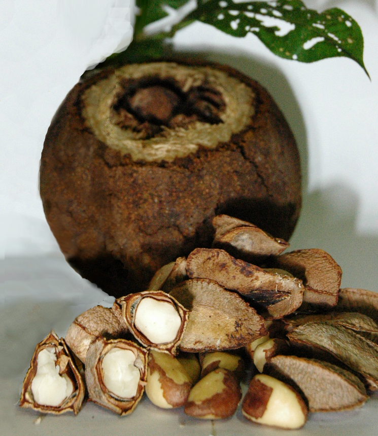

Árvores e Frutíferas
Castanha-do-Pará
Bertholletia excelsa
A castanha-do-Pará, também chamada castanha-do-brasil, é a semente comestível da castanheira, uma grande árvore da Amazônia. As sementes se desenvolvem dentro de um fruto lenhoso e arredondado, conhecido como ouriço. A imagem é ilustrativa e combina uma reconstituição do fruto com sementes.
- Espécie
- Bertholletia excelsa
- Região de origem
- Amazônia
- Parte consumida
- Semente